Задача
CRM для сотрудников банка, работающих с клиентами напрямую. Начал с точечных доработок: разные отделы приходили с локальными запросами: добавить кнопку, поле, поменять логику перехода и пр. За полгода таких правок интерфейс превратился в набор разнородных решений поверх друг друга. Вырос функционал, но не выросла система. Решил не чинить дальше точечно, а сделать полный редизайн всей CRM на дизайн-системе, которую банк уже использовал в новых продуктах
Ограничения
Из готовой дизайн-системы были доступны только атомы и молекулы: кнопки, инпуты, иконки, различные интерфейсные элементы. Организмов под задачи CRM (карточка клиента, таблица обращений, панель кредитных договоров) в ней не было. Значит, каждый сложный блок нужно было спроектировать самому, не выходя за рамки токенов системы, иначе CRM снова начала бы жить своей отдельной визуальной жизнью
Решение, примеры Карточка клиента
Было: верхняя горизонтальная навигация занимает место по всей ширине, статусы клиента (VIP, зарплатный, несовершеннолетний) не образуют единой системы обозначений, блоки продуктов клиента визуально не отделены друг от друга Стало: слева компактная иконочная навигация, которая масштабируется на любое число разделов без потери места сверху; статусы клиента собраны в единый набор тегов; продукты клиента (кредитные договоры, премиальные программы, карты) - сворачиваемые блоки с одинаковой структурой заголовок/таблица
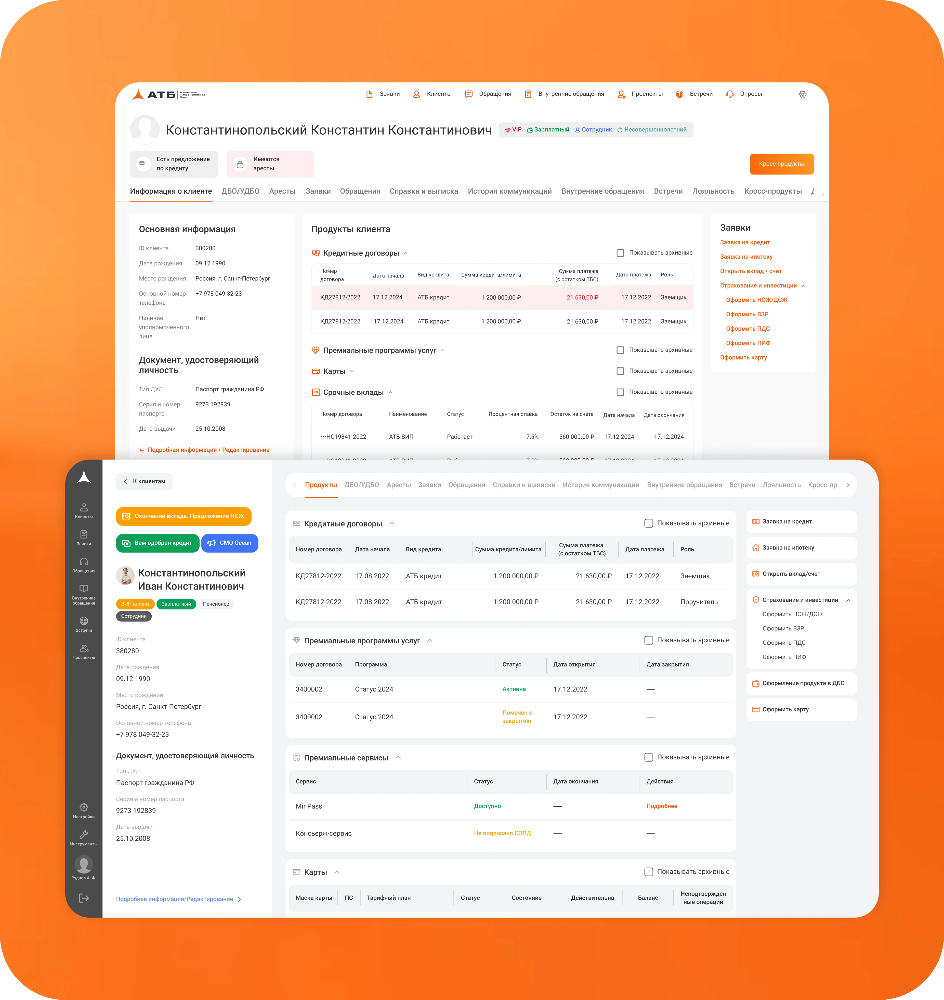
Решение, примеры Внутренние обращения
Было: одна широкая таблица с обращениями, где статус, направление и участники соседствуют в тесных колонках Стало: список обращений собран карточками. Статус вынесен как отдельный акцент, состав участников и направление читаются без горизонтальной прокрутки взгляда, действие "Создать внутреннее обращение" находится на видном месте
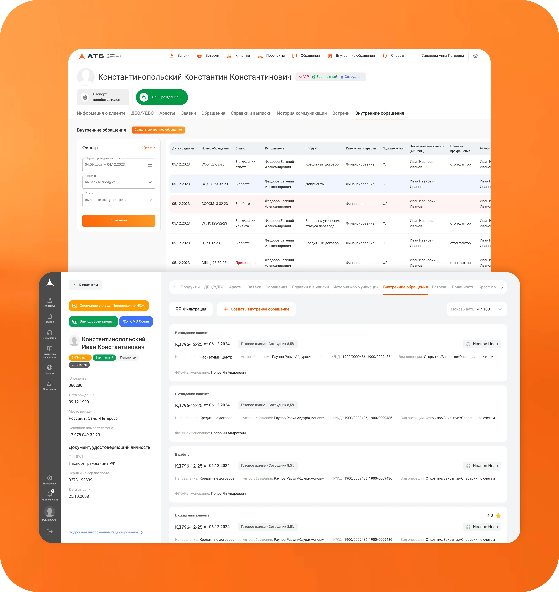
Решение, примеры Редактирование профиля клиента
Было: плоская форма без визуального якоря. Непонятно, где "человек", а где "данные" Стало: фото клиента вынесено в отдельный блок слева и становится точкой входа в раздел, поля сгруппированы по смысловым секциям, добавлен структурный блок "Предыдущие ФИО" с возможностью добавления записей
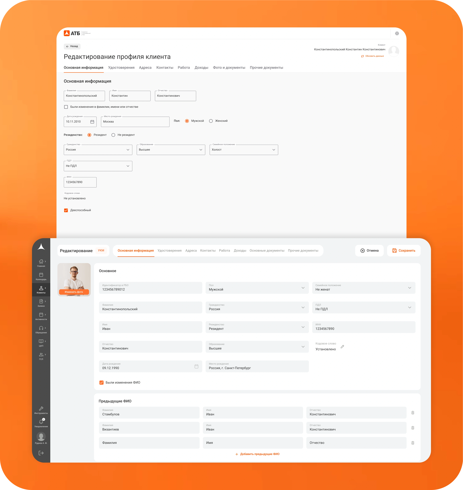
Результат
Вместо разрозненных интерфейсов, доросших до текущего состояния через отдельные правки, сотрудники банка получили один инструмент на одной дизайн-системе: одинаковая логика навигации, одинаковый язык статусов и группировки данных на всех экранах
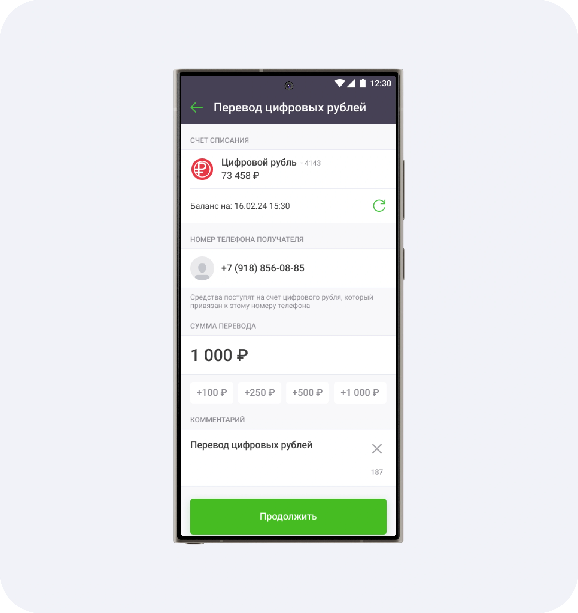
Задача
Спроектировать раздел цифрового рубля в мобильном приложении банка практически с нуля: главный экран кошелька, открытие счёта, пополнение, переводы (b2b, c2c и другие типы), автопереводы, история операций, привязка карты, лимиты, уведомления. Аналитик формировал примерную структуру флоу, я доводил его до полноценного UX/UI со всеми состояниями, а там, где в самой структуре находил нестыковки в логике, пересобирал её и предлагал аналитику альтернативу. Дизайн-система в банке уже существовала, но местами требовала наведения порядка
Ограничения
Референсов не было. Ни один банк ещё не реализовал цифровой рубль в таком виде. Были только рекомендации ЦБ РФ. Продукт устроен не как обычные деньги: ЦБ регламентирует лимиты по операциям и балансу, а часть переводов может быть целевой («окрашенной»), то есть ЦБ ограничивает, на что пользователь вправе потратить свои средства. Задача дизайна, показать это понятно и заранее, а не как неприятный сюрприз Отдельная сложность - это жёсткая регламентация формулировок со стороны ЦБ: часть терминологии нельзя было упростить или переформулировать вольно, даже если с точки зрения UX это читалось бы понятнее
Процесс
Разрабатывал несколько вариантов подачи флоу. После, обсуждал их с командой дизайнеров банка, вместе выбирали сильнейший. Далее отправлял вариант аналитикам на проверку соответствия бизнес-логике, после чего финальная версия проходила внутреннее ревью с другими дизайнерами, аналитиками и бизнес-командой и уходила на согласование в ЦБ РФ. Только после этого попадала в разработку, где я лично сопровождал каждое состояние экрана и новый компонент
Результат
Проект передан в разработку и запущен. После утверждения ЦБ признал эту реализацию лучшим UX-решением по цифровому рублю из всего, что видел
Задача
На старте маркетплейса как такового не было. Был сайт с готовым, но слабым дизайном: без порядка, консистентности, выравнивания и единого стиля. Стояла задача спроектировать регистрацию на платформе для продавцов и покупателей, личный кабинет для каждой из ролей, и лендинги для трёх аудиторий: продавцов, ломбардов и покупателей
Ограничения
Регистрацию и личный кабинет нужно было отрисовывать поверх уже существующего, слабо собранного сайта, без права переделать всё с нуля. Готовой дизайн-системы не было вообще, а полноценный редизайн планировался позже. Вместо того чтобы тратить время на систему, которая скоро всё равно устареет, приняли решение собрать минимальный UI-кит, ровно настолько, чтобы ускорить текущую работу, не проектируя лишнего наперёд
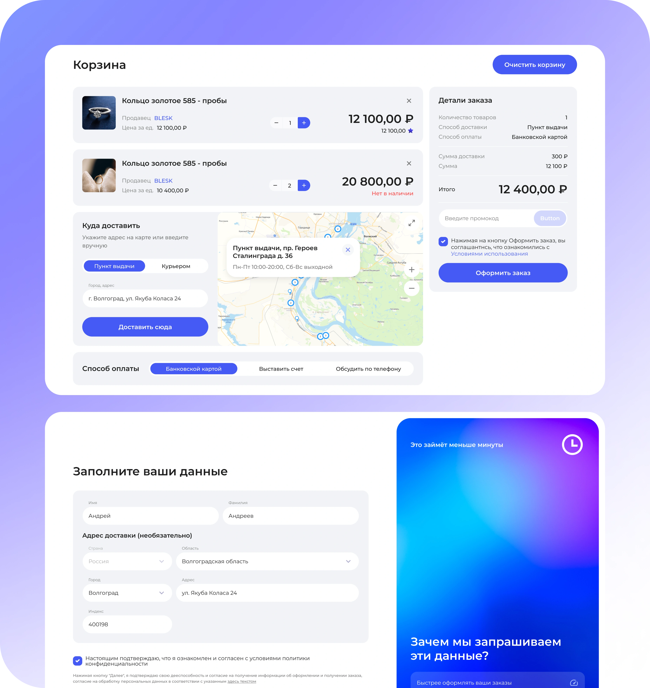
Процесс
Я руководил дизайн-отделом, параллельно на подряде работала внешняя студия: по задумке я выстраивал процесс целиком, а студия закрывала часть задач под моим руководством Синхронизировать отдел и студию в единый процесс не успели, так как у компании начались финансовые трудности, которые остановили полноценную интеграцию
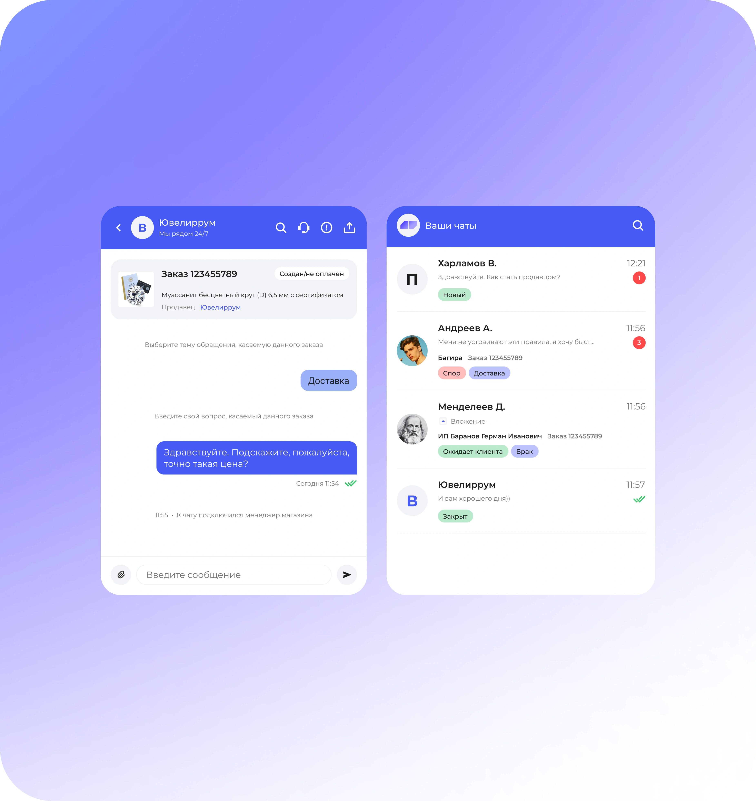
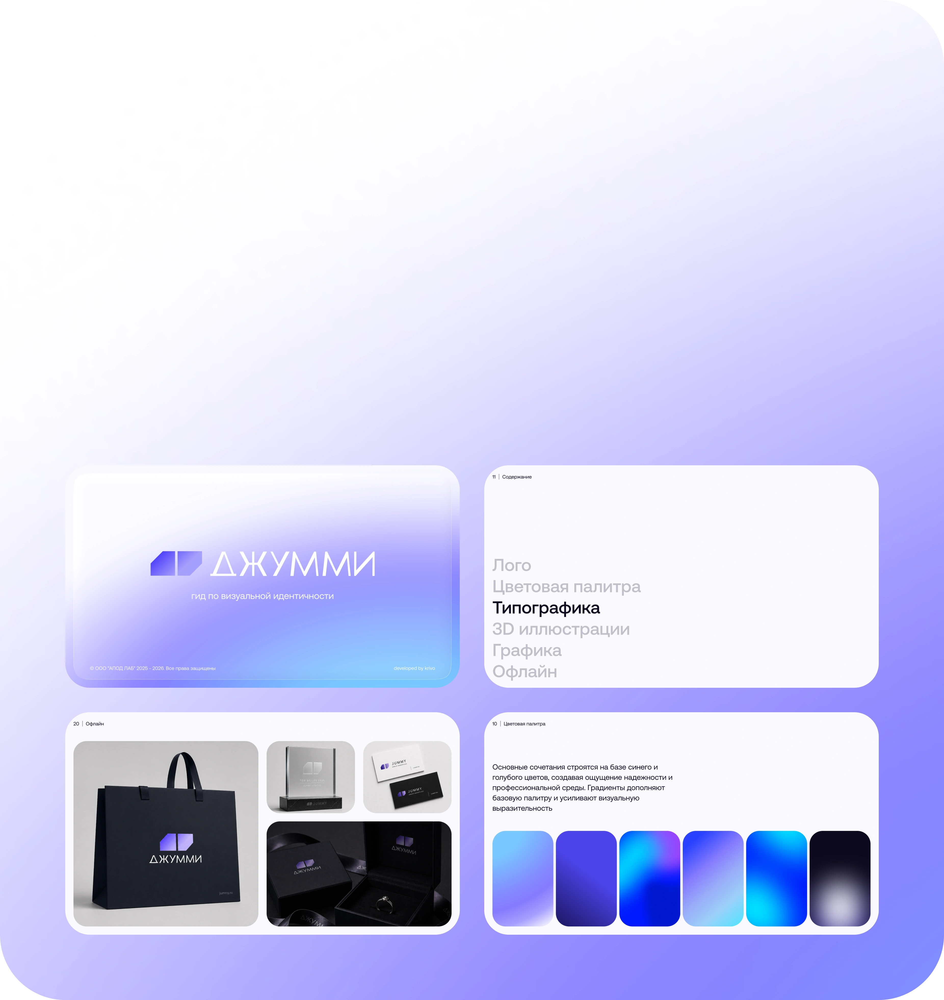
Результат
UI и UX получили положительный отклик от всей команды. Успели запустить лендинги для продавцов и ломбардов. Регистрация, личные кабинеты и остальные инструменты были переданы в разработку до заморозки проекта
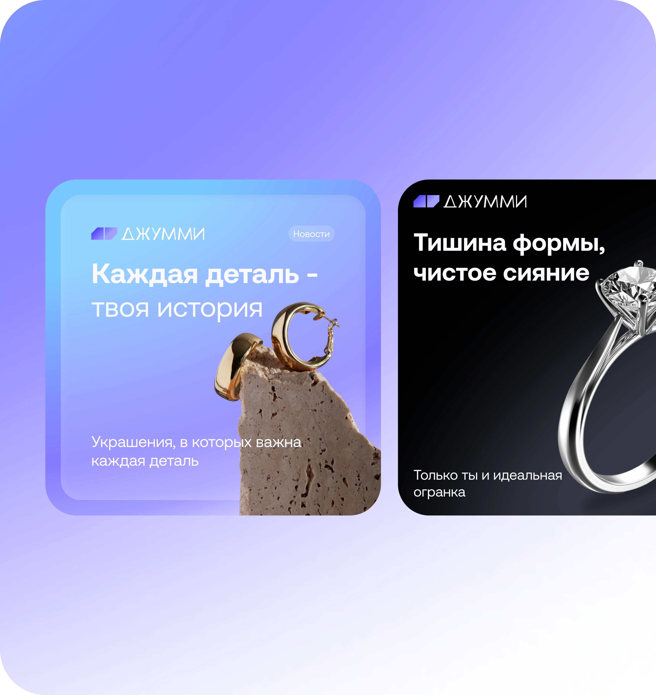
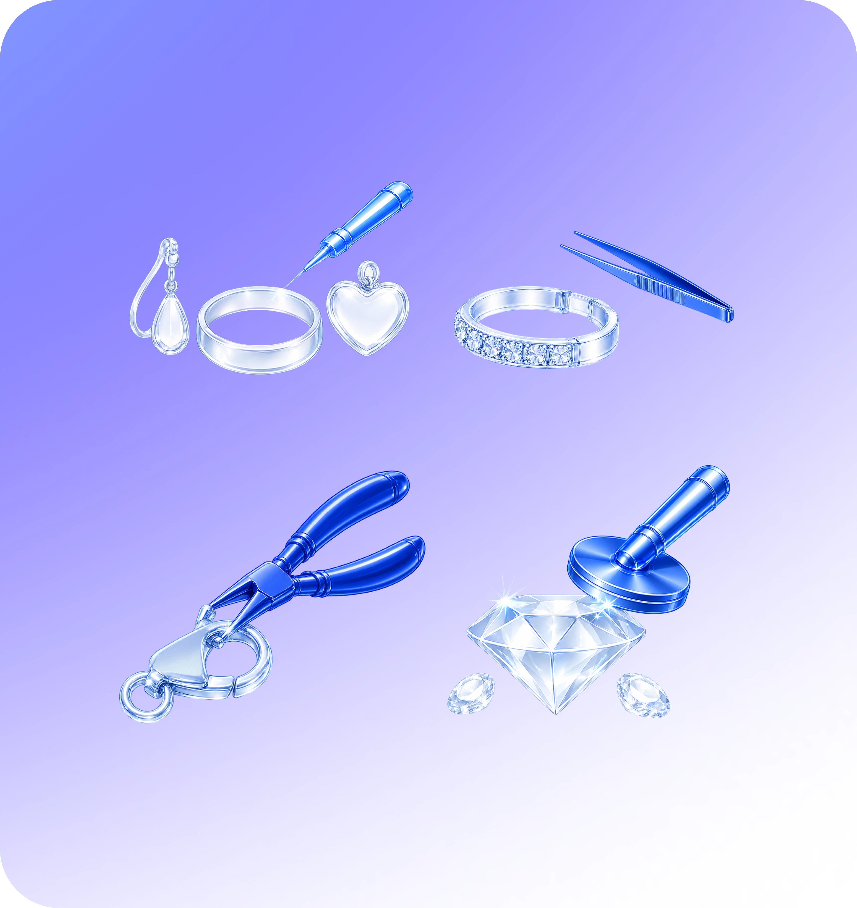
Задача
Изначально получил в работу готовый Telegram Mini App. Дальше — добавлял новые функции и целые разделы, продумывая логику и отрисовывая полный флоу каждого из них Отдельным треком делал маркетинговые материалы: презентации под мобильные устройства, креативы для соцсетей, стикерпак, аватарки для сетки каналов После того как основной функционал приложения устоялся, поступила задача адаптировать его под полноценную веб-версию
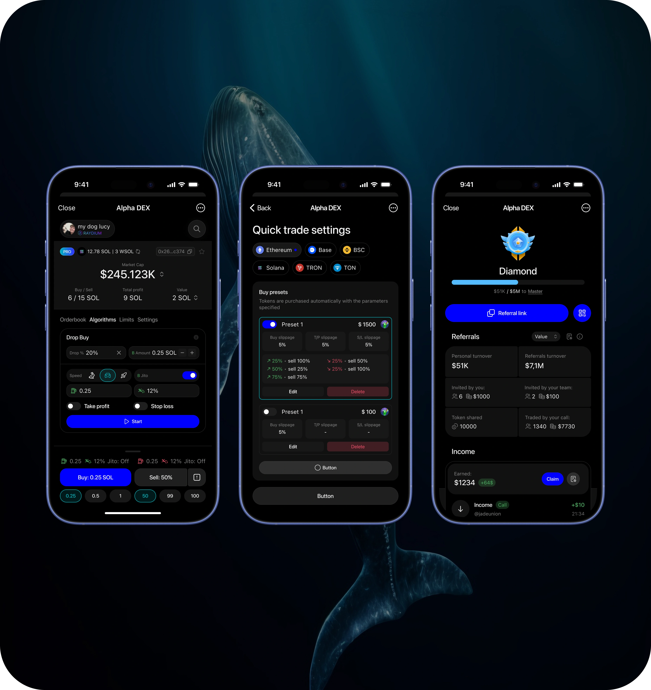
Ограничения
DEX-биржи — сложная предметная область: ордербук, торговые пары, механика смарт-контрактов, комиссии сети. Для дизайнера без контекста это стало бы серьёзным барьером, но я в крипте и блокчейне с 2017 года — сначала как активный пользователь и пропагандист, только потом как дизайнер. Это сняло типичную для таких проектов проблему "объяснить дизайнеру, как это работает": механику продукта я понимал на уровне пользователя ещё до того, как начал его проектировать
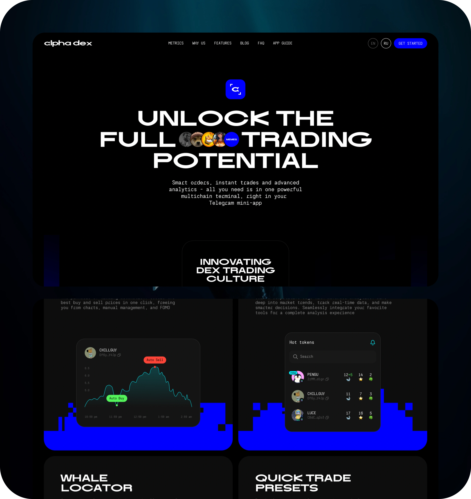
Процесс
Работал в команде, где каждый закрывал свою часть задач. По новым функциям и разделам, как правило, готовил несколько вариантов подачи, после чего решение утверждалось всей командой вместе с CEO компании
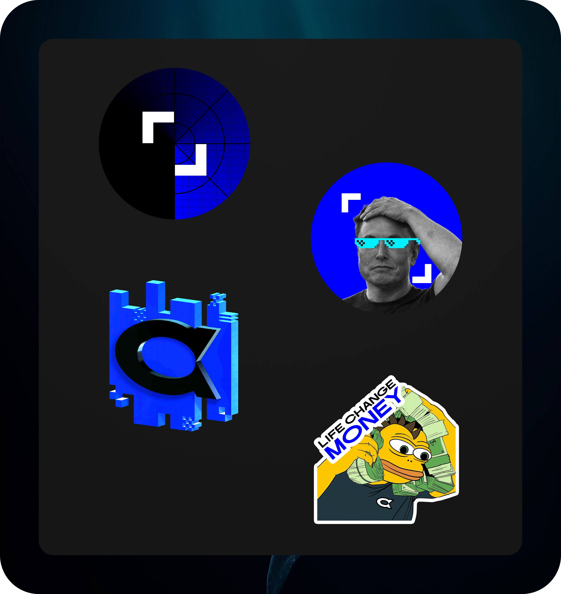
Результат
Веб-версия и обновлённый Mini App запущены и работают. Продуктом пользуюсь сам — как активный участник экосистемы, а не только как её бывший дизайнер
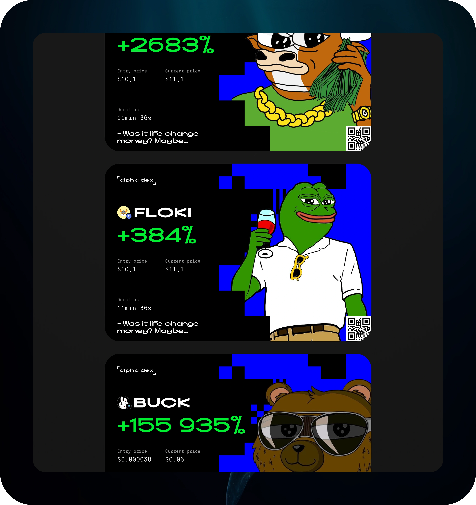
Раздел цифрового рубляNDA
ЦБ РФ признал эту реализацию лучшим UX-решением по цифровому рублюЗадача
Спроектировать раздел цифрового рубля в мобильном приложении банка практически с нуля: главный экран кошелька, открытие счёта, пополнение, переводы (b2b, c2c и другие типы), автопереводы, история операций, привязка карты, лимиты, уведомления. Аналитик формировал примерную структуру флоу, я доводил его до полноценного UX/UI со всеми состояниями, а там, где в самой структуре находил нестыковки в логике, пересобирал её и предлагал аналитику альтернативу
Дизайн-система в банке уже существовала, но местами требовала наведения порядка
Ограничения
Референсов не было. Ни один банк ещё не реализовал цифровой рубль в таком виде. Были только рекомендации ЦБ РФ. Продукт устроен не как обычные деньги: ЦБ регламентирует лимиты по операциям и балансу, а часть переводов может быть целевой («окрашенной»), то есть ЦБ ограничивает, на что пользователь вправе потратить свои средства. Задача дизайна, показать это понятно и заранее, а не как неприятный сюрприз
Отдельная сложность - это жёсткая регламентация формулировок со стороны ЦБ: часть терминологии нельзя было упростить или переформулировать вольно, даже если с точки зрения UX это читалось бы понятнее
Решение, примеры
Разрабатывал несколько вариантов подачи флоу. После, обсуждал их с командой дизайнеров банка, вместе выбирали сильнейший. Далее отправлял вариант аналитикам на проверку соответствия бизнес-логике, после чего финальная версия проходила внутреннее ревью с другими дизайнерами, аналитиками и бизнес-командой и уходила на согласование в ЦБ РФ. Только после этого попадала в разработку, где я лично сопровождал каждое состояние экрана и новый компонент
Результат
Проект передан в разработку и запущен. После утверждения ЦБ признал эту реализацию лучшим UX-решением по цифровому рублю из всего, что видел
CRM для клиентского сервиса
Задача
CRM для сотрудников банка, работающих с клиентами напрямую. Начал с точечных доработок: разные отделы приходили с локальными запросами: добавить кнопку, поле, поменять логику перехода и пр. За полгода таких правок интерфейс превратился в набор разнородных решений поверх друг друга. Вырос функционал, но не выросла система. Решил не чинить дальше точечно, а сделать полный редизайн всей CRM на дизайн-системе, которую банк уже использовал в новых продуктах
Ограничения
Из готовой дизайн-системы были доступны только атомы и молекулы: кнопки, инпуты, иконки, различные интерфейсные элементы. Организмов под задачи CRM (карточка клиента, таблица обращений, панель кредитных договоров) в ней не было. Значит, каждый сложный блок нужно было спроектировать самому, не выходя за рамки токенов системы, иначе CRM снова начала бы жить своей отдельной визуальной жизнью
Решение, примерыКарточка клиента
Было: верхняя горизонтальная навигация занимает место по всей ширине, статусы клиента (VIP, зарплатный, несовершеннолетний) не образуют единой системы обозначений, блоки продуктов клиента визуально не отделены друг от друга
Стало: слева компактная иконочная навигация, которая масштабируется на любое число разделов без потери места сверху; статусы клиента собраны в единый набор тегов; продукты клиента (кредитные договоры, премиальные программы, карты) - сворачиваемые блоки с одинаковой структурой заголовок/таблица
Решение, примерыВнутренние обращения
Было: одна широкая таблица с обращениями, где статус, направление и участники соседствуют в тесных колонках
Стало: список обращений собран карточками. Статус вынесен как отдельный акцент, состав участников и направление читаются без горизонтальной прокрутки взгляда, действие "Создать внутреннее обращение" находится на видном месте
Решение, примерыРедактирование профиля
Было: плоская форма без визуального якоря. Непонятно, где "человек", а где "данные"
Стало: фото клиента вынесено в отдельный блок слева и становится точкой входа в раздел, поля сгруппированы по смысловым секциям, добавлен структурный блок "Предыдущие ФИО" с возможностью добавления записей
Результат
Вместо разрозненных интерфейсов, доросших до текущего состояния через отдельные правки, сотрудники банка получили один инструмент на одной дизайн-системе: одинаковая логика навигации, одинаковый язык статусов и группировки данных на всех экранах
Ювелирный маркетплейс
Задача
На старте маркетплейса как такового не было. Был сайт с готовым, но слабым дизайном: без порядка, консистентности, выравнивания и единого стиля. Стояла задача спроектировать регистрацию на платформе для продавцов и покупателей, личный кабинет для каждой из ролей, и лендинги для трёх аудиторий: продавцов, ломбардов и покупателей
Ограничения
Регистрацию и личный кабинет нужно было отрисовывать поверх уже существующего, слабо собранного сайта, без права переделать всё с нуля. Готовой дизайн-системы не было вообще, а полноценный редизайн планировался позже. Вместо того чтобы тратить время на систему, которая скоро всё равно устареет, приняли решение собрать минимальный UI-кит, ровно настолько, чтобы ускорить текущую работу, не проектируя лишнего наперёд
Процесс
Я руководил дизайн-отделом, параллельно на подряде работала внешняя студия: по задумке я выстраивал процесс целиком, а студия закрывала часть задач под моим руководством
Синхронизировать отдел и студию в единый процесс не успели, так как у компании начались финансовые трудности, которые остановили полноценную интеграцию
Инициатива сверх задачи
Помимо основной задачи, самостоятельно разработал брендбук. Тем самым, заложил основу для будущего полного редизайна всех инструментов платформы, которого никто ещё не просил
Результат
UI и UX получили положительный отклик от всей команды. Успели запустить лендинги для продавцов и ломбардов. Регистрация, личные кабинеты и остальные инструменты были переданы в разработку до заморозки проекта
DEX-биржа
Задача
Изначально получил в работу готовый Telegram Mini App. Дальше, добавлял новые функции и целые разделы, продумывая логику и отрисовывая полный флоу каждого из них
Отдельным треком делал маркетинговые материалы: презентации под мобильные устройства, креативы для соцсетей, стикерпак, аватарки для сетки каналов
После того как основной функционал приложения устоялся, поступила задача адаптировать его под полноценную веб-версию
Ограничения
DEX-биржи - это сложная предметная область: ордербук, торговые пары, механика смарт-контрактов, комиссии сети. Для дизайнера без контекста это стало бы серьёзным барьером, но я в крипте и блокчейне с 2017 года: сначала как активный пользователь и только потом как дизайнер. Это сняло типичную для таких проектов проблему "объяснить дизайнеру, как это работает": механику продукта я понимал на уровне пользователя ещё до того, как начал его проектировать
Процесс
Работал в команде, где каждый закрывал свою часть задач. По новым функциям и разделам, как правило, готовил несколько вариантов подачи, после чего решение утверждалось всей командой вместе с CEO компании
Результат
Веб-версия и обновлённый Mini App запущены и работают. Продуктом пользуюсь сам, как активный участник экосистемы, а не только как её бывший дизайнер